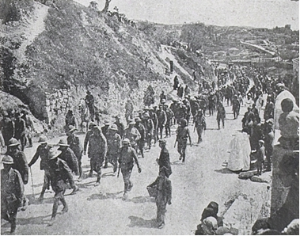
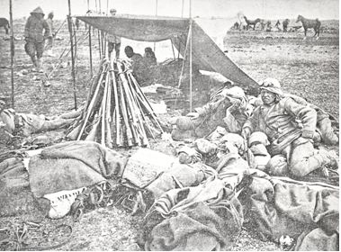
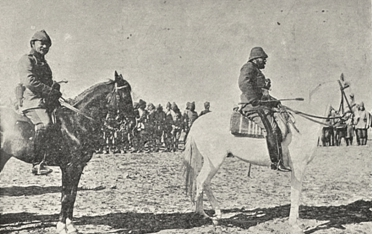

Mısır’dan büyük İngiliz kuvvetlerinin başka tarafa nakledilmekte olduğuna dair gelen haberler Türk Başkomutanlığı’nı Kanal’a karşı yapılması tasarlanıp hazırlıkları yapılmakta olan büyük harekâttan önce daha zayıf kuvvetlerle İngilizlere taarruz ederek onlara, Kanal’dan geçen nakil yollarının daima tarafımızdan tehdit edilmekte olduğunun hatırlatılmasına mecbur etmişti. Şubat ve Mart aylarında gelen haberlere göre keşif kollarımız daima Kanal’ın 10–15 kilometre doğusunda düşman postalarına rastlamış ve artık Kanal’a kadar yaklaşmamışlardı. Bedevîler, İngilizlerin Kanal’ın doğusuna doğru müstahkem bir mevzi inşa etmekte ve Kantara’dan itibaren çölde bir demiryolu ile su yolu yapmakta olduklarını iddia etmişlerdi. Uçaklarımız da Muhammediye–Kantara-Hamisa hattında yani El Ariş–Kantara kervan yolunun her iki tarafındaki bütün büyük vahalarda da çadırlı ordugâhların bulunduklarını tespit etmişlerdi; fakat bu ordugâhların ne kuvvette ve hangi birlikler tarafından işgal edilmiş olduklarını tabii ki bildiremiyorlardı. Bunun iyice anlaşılabilmesi zorunlu bir keşifle mümkün olabilirdi.
Bunun için yedi piyade bölüğü, dört adet makineli tüfek (mekkâreler üzerinde), bir hecinsüvar bölüğü, dört adet dağ topu ve bir sıhhiye müfrezesi ki, toplam 1600 er ve 800 hayvandan oluşan bir müfreze ile Bîrülmezar ve Bîrülabid üzerinden doğrudan doğruya düşmanın tertibatının Katya’da bulunan ortasına taarruz etmeye karar verdim. Bu esnada Binbaşı Mühlmann’ın komutasında 600 er kuvvetinde akıncı alayı ve bir Türk hecinsüvar alayı ve bir zayıf piyade bölüğü ve iki dağ topundan oluşan bir müfreze ile Mağara dağlarının kuzey kenarı boyunca Magaybra vahası üzerinden yürüyecek düşman karakollarının güney kanadından dolaşarak Düveydar’dan düşmanın gerisinde Kantara’ya giden yol üzerinde küçük bir vahaya taarruz edecekti.
300 numaralı uçak müfrezesinden 2 muharebe uçağı kademeli olarak bu harekâtımızın devam ettiği müddetçe Bîrüssebi’den El Ariş’e ileriye alınacaktı. Bunlar 22 Nisan’da ilk defa olarak Portsait’e uçmuşlar ve birkaç bomba atmışlardı. Bunların birdenbire görünüşü büyük bir korku yaratmıştı.
Bu teşebbüsümüzdeki muvaffakiyetin esas şartı düşmanın üzerine ansızın atılmakta idi. Bunun için biz yalnız geceleri yürüyor ve gündüzleri, kuyuların bulundukları mahallerde geniş bir daire üzerinde küçük küçük müfrezecikler halinde arazinin teşkil ettiği yarıklara girerek yahut küçük çalıların aralarına sokularak ordugâhta geçiriyorduk.
Nisan’ın 22. akşamı –Paskalya’nın cumartesi günü– güneş denize doğru meylettiği ve akşam semasının yalnız çölde görünebilen harikulâde olgun ve daima hareket halindeki renklerle süslediği vakit Bîrülabid-Magaybra ordugâhlarında hareket başlamıştı. Ben, düşman karakolları tarafından emniyet altında tutulan El Ariş–Kantara kervan yoluna taarruz etmemeye, aksine bunun güneyinden dolaşarak Fusiye ve Ogratina küçük vahaları üzerinden yürümeye karar vermiştim. Yürüyüşe başladığımızdan yarım saat sonra bir Bedevî, Ogratina vahasının düşman tarafından işgal edildiği haberini getirmişti. Fakat bu düşman birliğinin kuvveti hakkında bir şey söyleyememişti. Ben Fusiye’ye kadar yürümek, orada mola vermek ve gün ağarmaya başlarken, İngilizlere taarruz etmeye karar vermiştim. Fakat sabahın saat ikisinde Fusiye’de hecinsüvar bölüğünün bir keşif kolu tarafından uyandırıldık; bu keşif kolu Ogranita’yı geçtiğini ve orada düşmana tesadüf etmediğini bildiriyordu. Her halde Bedevînin getirdiği haber yine yanlıştı. Eğer biz eski plânımızı tatbik ederek Katya’ya taarruz etmek istersek derhal yola çıkmak mecburiyetinde idik. Fakat birdenbire yoğun bir sis bastı, bu sis tabakası o kadar kalın ve yoğun idi ki, beş adım ilerisini dahi görmek mümkün olamıyordu. Kısa bir yürüyüşten sonra Ogratina’ya gelmiş ve burada birçok boş konserve kutularına tesadüf etmiştik –bütün İngiliz ordugâhlarının tipik bir alâmeti– şu halde genç Bedevînin verdiği haber doğru idi ve İngilizler hakikaten buraya gelmişlerdi.
Yoğun sis tabakası içinde Ogratina’dan yaklaşık iki kilometre kadar ilerlemiş bulunduğumuz bir sırada arkamızda birdenbire şiddetli bir tüfek ateşi başlamıştı. Worcester Yeomanry’nin iki süvari bölüğü ile Lowland Engineers’ten bir yarım bölük Ogratina vahasının yaklaşık 200 metre kuzeyindeki bir kumlukta açık ordugâha yerleşmiş bulunuyorlardı. Onların nöbetçileri ne gece yarısı vahada dolaşan hecinsüvarların ve ne de vahanın içerisinde ilerlemekte olan müfrezemizin farkına varmamışlardı. Ancak daima yüksek sesle gevezelik eden ağırlıklarımız vahaya varır varmaz nöbetçiler uyanmışlar ve bir iki tüfek ateşiyle ordugâhtaki arkadaşlarını silahbaşı etmişlerdi.
Hemen taarruz emri verdim ve bataryayı mevziye sokturdum. Bir tüfek muharebesi başlamış ve topçu yoğun sisten dolayı buna katılamamıştı. Bu muharebeye kâh şiddetle, kâh şiddetini azaltarak bir buçuk saat kadar devam ettikten sonra sis birdenbire açılmış ve önce Ogratina vahasının hurma ağaçlarının tepeleri bu sis denizinin içinde görünmeye başlamış ve bir iki dakika sonra da İngiliz avcıları makineli tüfekleri tarafından tutulmuş olan bir kum tepesi sezilmişti. Daha topçular hedeflerini tayin ederek nişan hatlarını bunlar üzerine yöneltmeden önce herkesçe malûm olan “Allah, Allah!” sadaları işitilmişti –Türklerin hücuma kalktıkları vakit kullandıkları kelime– ve birkaç dakika sonra da İngilizlerin teslim oldukları haberini almıştık.

Kanal harekatında Katya’da esir alınan İngiliz askerleri
Kudüs’e götürülürken.
Onlar kendilerini cesaretle müdafaa etmiş ve çok kanlı zayiat vermişlerdi. Bunlardan yaklaşık 150 kadar yaralanmamış İngiliz elimize düşmüştü. Muharebe sahasını temizlemek, yaralıları ve alınan ganimetle esirleri Bîrüssebi’ye geri göndermek için Binbaşı Tiller’i üç bölükle orada alıkoymuştum. Bunları tamamladıktan sonra kısa bir mola vererek Katya üzerine yürüttüğüm müfrezeyi onlar da takip edeceklerdi.
Yaklaşık iki saatlik bir yürüyüşten sonra önümüzde üç kilometrelik bir mesafede düz bir kumlukta otuz ila kırk çadırlık bir ordugâh görmüştük. Gözlerimizin önünde cereyan etmekte olan sakin bir ordugâh hayatından İngilizlerin Paskalya’yı taciz edilmeksizin sükûnetle geçireceklerini zannettikleri ve her halde sabahleyin erkenden Ogratina’da cereyan eden olaydan haberdar olmadıkları anlaşılıyordu.
Bataryaya mevzi aldırtmış ve taburu da, sütre temin eden bir arazi dalgasının arkasında hücuma hazır bir vaziyete koydurmuş ve hecinsüvar bölüğüne de düşmana yandan ve arkadan taarruz etmek üzere güneyden dolaşmayı emretmiştim. Genel görünüşünü görmek iyice mümkün olmayan ve adam boyunda birçok yüksek tepeyle örtülü olan bu arazide avcı hatlarımız düşman tarafından fark edilmeksizin onun ordugâhına yaklaşık 1500 metre mesafeye kadar sokulabilmişlerdi ki, bu esnada atla gezmeye çıkmış olan birkaç İngiliz süvarisi hareket istikametimize gelir gelmez avcılarımız tarafından çılgınca ateş altına alınmıştı. Bu vaziyette bataryaya da ateş açması için emir vermek mecburiyetinde kalmıştım. İlk mermi İngiliz ordugâhının içinde patlamıştı. Düşman da makineli tüfekleri mevziye sokmuş ve ilerleyen Türk piyadesi üzerine müthiş bir seri ateş açmıştı. Düşman mevziinden yaklaşık 600 metrelik bir mesafede hareketsiz bir ateş muharebesi başlamıştı. Avcı hatlarımızı sağa ve sola doğru uzatmamıza rağmen taarruzumuz zorlukla ilerlemişti. Bu arada güneş semada yükselmiş ve harbeden birliklerin arasında amansız bir şekilde yanmaya başlamıştı. Rüzgâr esmiyor, mataralar tamamen boşalmış bir halde bulunuyordu. Geceden kumdaki yürüyüş ve sabahki muharebe piyadeyi tamamen yorgun düşürmüştü.
Saat dokuza doğru vaziyet ciddileşmeye başlamıştı. Birkaç düşman süvari bölüğü –herhalde Romani istikametinden gelerek– sağ cenahımızda görünmüşler ve kumluklar üzerinde dörtnala koşarak arkamıza düşmeye çabalamışlardı. Dağ bataryasının bir-iki iyi nişanlanmış şarapneli bunları geri dönmeye ve kumlukların aralarından çekilmeye mecbur etmişti ve bunlar çok garip olarak bütün gün bir daha görünmemişlerdi.
Sol kanadımızdaki hecinsüvar bölüğü kendi muktedir komutanı Sırrı Bey’in sevk ve idaresi altında muharebeye girmişti. O da açık arazide ilerlemeye muvaffak olamıyordu. 300 numaralı uçak müfrezesinin yaveri Bavyeralı teğmen Seuter bölüğe ilerlemesi için emir götürmüş ve ileriye atılmakta örnek olarak hecinsüvarları beraber sürüklemeye gayret etmiş ve bu esnada kahramanca ölmüştü. Başından aldığı bir yara bu cesur subayın genç hayatına vaktinden önce son vermişti. Onu biz ertesi gün Bîrülabid’in hurmalıkları altında gömmüştük.
Dağ bataryasının bir takımını yaklaşık 1500 metre kadar ileriye almıştım. Fakat batarya biraz sonra ateş kesmek mecburiyetinde kalmıştı; çünkü batarya bütün cephane mevcudunu sarf etmiş ve cephane yüklü deve kolları da henüz muharebe meydanına varamamıştı. Hemen her muharebede tekrarlanan ve komutanın sinir ve iradesinde en büyük tahammül ve başarma kudreti isteyen o çok ciddî an gelmişti. Son ihtiyatlar elden çıkmış ve komutanın muharebenin cereyanı üzerine artık hiçbir tesiri kalmamış derhal bir karar verilmediği takdirde düşmanın takviye kuvveti alması tehlikesi fazlasıyla artmıştı.
Ansızın batarya tekrar ateş açtığı vakit geniş bir nefes almıştım. Nihayet cephane kolu muharebe meydanına gelebilmişti. Öğleden sonra saat 3’te İngilizler beyaz bayrağı göstermişlerdi. Hemen hücuma kalkan Türk piyadesinin başında Binbaşı Hardy; İngiliz alay komutanının kılıcını almıştı. Yaralılara bakıldıktan ve ganimetler yerleştirildikten sonra karanlık basarken Bîrülabid’e geri yürüyüşe başlamıştık.
22 Nisan akşamı Binbaşı Mühlmann komutası altındaki kol ile Magaybra’dan yola çıkmış ve pek zahmetli ve yorucu bir gece yürüyüşünden sonra 23 Nisan sabahı erkenden yoğun bir sis içinde kolun ucu ile ansızın Düveydar’da tel örgülü bir İngiliz avcı siperinin üzerine düşmüştü. Her iki Türk topu sisin içinde en kısa bir mesafeden İngiliz makineli tüfeklerinin ateşine maruz kalmıştı. Batarya komutanı ile takım komutanı şehit olmuşlardı. Buna rağmen cesur Anadolu erleri cesaretlerini ve akıllarını kaybetmemiş ve Teğmen Heiden’in komutası altında toplarını en yakında bulunan bir kum tepesinin gerisinde mevziye sokmuşlardı. Değişken bir şiddet ve muvaffakıyetle devam eden üç saatlik ateş muharebesinden sonra Binbaşı Mühlmann muharebeyi kesmişti. Mühlmann, düşmanın dikkatini kendine çekmekten ibaret olan vazifesini yerine getirmiş bulunuyordu. Bundan başka kendisine bir düşman kolunun Kantara’dan üzerine gelmekte olduğu haber verilmişti. Düşmandan sıyrılabilmek çok kolay ve zayiatsız olmamıştı. Arap hecinsüvarları şehit düşen arkadaşlarının intikamını almayı bir vazife bildiklerinden geriye çekilmekten kaçınmışlardı. Diğer üzücü zayiat arasında Mühlmann’ın koluna verilmiş olan Türk hecinsüvarlar bölüğünün bilhassa muktedir ve gayretli komutanı Yüzbaşı Hâlet’in de şehadet matemini tutmak mecburiyetindeydik. Bu genç ve kendisinden çok şey beklenen subay bir kahraman gibi ölmüştü. Vaktiyle muharebede o kadar cesaretle dövüşen Araplar, geri yürüyüşte İngiliz uçaklarının attıkları bombalardan son derece ürküyorlardı.
Mühlmann kolunun İngiliz emniyet hattının 10 ilâ 15 kilometre gerisinde ve geri çekilme yollarının üzerindeki bir noktaya ansızın taarruz etmesi herhalde İngiliz komutanlığını şaşırtmış ve ast komutanlarının karar verme kudretlerini felce uğratmış olacaktır. Bu mesele İngilizlerin muhtelif karakollarından hiç birisinin Katya’daki arkadaşlarının imdadına gelmemesi ve bizi takip etmek için en ufak bir harekete bile girişmemiş olmalarıyla izah edilebilir. Esir düşen İngiliz alayı komutanı, kendisine yardıma gelmeyen arkadaşları aleyhinde bulunmakta haklıdır. İngilizlerin bu hareketsizliği belki Binbaşı Mühlmann’ın Düveydar üzerine taarruz ettiği aynı gecede bir İngiliz kolunun Magaybra üzerine yürümesi ve bu vahanın tarafımızdan işgal edilmemiş olduğunu görünce tekrar çıkış noktaları olan Hamisa’ya avdet etmeleri ve bu esnada keza Mühlmann koluna da rastlamaması ile izah edilebilir.

Sina cephesinde süvari birliği istirahat esnasında.
Biz Ogratina ve Katya’da 23 subay ve 257 er esir almıştık. Bu mağrur alayın diğer kısmı cesurane bir müdafaadan sonra tamamen ölmüştü. Bizim zayiatımız nispeten azdı. Her iki muharebede 3 subay ve 33 er şehit düşmüş 48’i yaralanmıştı. Bunlardan 31’i ağır yaralıydı. Ele geçirilen 300 at ile fevkalâde iyi donatılmış 100 deveye pek sevinmiştik. Çünkü o vakit beygir ve yük hayvanı yetersizliğinden son derece sıkıntı çekiyorduk. Ogratina karargâhına girdiğim vakit büyük ve güzel bir İrlanda hayvanı ganimet olarak elime geçmiş ve Filistin’deki vazifem esnasında bana mükemmel hizmet etmişti.
Katya’daki İngiliz ordugâhının elimize geçmesini takiben bütün erler su tanklarına hücum ettiler. Bu fevkalâde yapılmış tankların içerisinde filtre edilmiş tatlı Nil suyu vardı ve herkes de bundan doya doya içmişti.
Bu taarruzî keşif tam bir muvaffakıyetle sonuçlanmış ve bundan, düşmanın mukavemet edeceği hattı Kanal’ın bu tarafında ileriye sürdüğü ve Kantara’dan normal genişlikte bir demiryolu ile su yolunu Romani’ye uzattığı ve böylece muhakkak surette Akdeniz sahilleri boyunca Filistin’e taarruz etmek niyetinde olduğu anlaşılmıştı. Bu harekâttaki muvaffakıyetin çok memnuniyet verici diğer bir tarafı da Türklerle müttefiklerinin itibarının Bedevîler nezdinde yükselmesi ve Filistin ile Suriye’de bulunan çok sayıda İtilâf Devletleri yanlılarının da iyice korkmalarıydı.
1915 senesi sonunda İngilizler Çanakkale harekâtının tasfiyesine karar verdikleri zaman Gelibolu ricatinin, İngiliz prestijini gerek Yakındoğu’da, gerekse İslâm âleminde önemli ölçüde sarsacağından tamamen emin bulunuyordu. Bunun için Çanakkale’deki muvaffakıyetsizliği yine Türklere karşı başka tarafta göze çarpacak bir muvaffakıyetle telafi etmek fikriyle yakından meşgul olmaya başlamışlardı. Ayrıca Süveyş Kanalı ve Mısır’ın doğrudan doğruya müdafaası da bazı zorluklarla karşılaştığından İskenderun Körfezi’ne büyük ölçüde bir çıkarma yapmak fikri yeniden doğmuştu. Gerçekten de Türklerin Arap vilâyetleriyle olan yegâne irtibatının İskenderun civarında kesilmesi ve inatla kapatılmasıyla İngilizlerin haklı olarak Irak’ta ordularının sevk ve idaresine en fazla faydalı olabileceklerini ve Mısır’ın müdafaasını da bu suretle en etkili bir tarzda sağlayabileceklerini zannetmişlerdi.
İskenderun civarına yapılacak bu çıkarma hakkındaki müzakerelerin İngilizlerin ilgili makamları nezdinde iyice ilerlediği bir zamanda, ansızın Fransızlar bu plana itiraz etmişlerdi. Onlar, böyle bir çıkarma hareketinin bilfiil Fransız sevk ve idaresi altında Fransız askerleri tarafından yapılmasının Fransız kamuoyu ve Suriye’deki maddî, manevî Fransız menfaatleri için zarurî olduğunu iddia etmişlerdi. Bunun üzerine İngilizler İskenderun civarına yapılacak bir çıkarmadan tamamen vazgeçmişler ve Süveyş Kanalı ile Mısır’ı doğrudan doğruya müdafaa etmeye karar vermişlerdi.
Türkler, İskenderun’a bir çıkarma yapılması fikrinden, İngilizleri vazgeçiren Fransızlara karşı çok teşekkür borçludurlar. Çünkü eğer İtilâf Devletleri, buraya baskın tarzında bir çıkarma yapmaya muvaffak olsalardı –ki, bunu başarmak ümidi çok fazlaydı– o vakit, Türkiye’nin durumu fevkalâde güçleşirdi. Türklerin, demiryollarının çok az olan kabiliyetinden ötürü, hususiyle bu arada dişlerine kadar tahkimat içine gömülecek olan İngilizleri, karaya çıktıkları yerden tekrar geriye atmak maksadıyla ve yeterli kuvvetlerle taarruza hazırlanabilmeleri için, çok zamana ihtiyaçları olduğu gibi İskenderun civarındaki irtibatlarının kesilmesi, Türk idare mekanizmasının, durum gereği olarak, İstanbul’da haddinden fazla yoğunlaşmış olması yüzünden de tesirini pek fazla hissettirecekti. Suriye, Irak ve Hicaz’da bulunan Türk birliklerinin cephane, elbise, yakacak madde ve harp malzemesi stoku önemsizdi ve bu birlikler iaşe yönünden günübirlik yaşıyorlar ve İstanbul ile Anadolu’dan gelen menzil nakliyatı uzun müddet kesintiye uğradığı takdirde çok zor bir duruma düşebilirdi. İngilizler Çanakkale’nin tahliyesinden sonra oradan serbestleyecek birlikleriyle Türklerin Mısır’a karşı daha büyük ölçüde bir taarruz yapacaklarını düşünüyorlardı. Herhalde onlar, Çanakkale’deki çetin muharebelerden sonra, kendi birlikleri gibi, Türk birliklerinin de düzenleme ve istirahate muhtaç olduklarını hesaba katmışlardı.
General Maxwell, Türklerin Mısır’a karşı 250 bin kişilik bir kuvveti sevkedeceklerini ihtimal dâhilinde tutarak Kanal’ın müdafaası için 12 piyade, 1 süvari tümeni, 20 ağır batarya ve dâhilde emniyet ve asayişin muhafazası için de 2 piyade tümeni ve Senûsîlere karşı batı sınırının muhafazası için üç karma tugay talep etmişti. Londra’daki Harbiye Nezareti bu talebi abartılı bulmuş ve Kanal’ın müdafaası için 5–6 tümen ile 19 ağır bataryalı, zırhlı otomobilli ve lâzım olduğu miktarda da uçaklı 8 piyade tümenini yeterli görmüştü.
Türk demiryolu şebekesi inşaatı hakkında o kadar iyi malûmata sahip olan İngilizlerin bu demiryollarının nakil kabiliyeti hakkında tamamen yanlış tahminlerde bulunmaları herhalde çok dikkat çekicidir. 250 bin kişilik bir kuvvetin Çanakkale’den Güney Filistin’e nakledilmesi için gereken uzun zaman bir tarafa, harp esnasında inşa edilmiş olan tek ve dar hatlı Afule–Hafirülavce demiryolu şüphesiz ki, bu kuvvetteki bir ordunun menzil hizmetlerini hiçbir vakit sağlayamazdı.
İngiliz gazetelerinin neşriyatına inanmak lâzım gelirse Lord Kitchener Mısır’a yaptığı bir ziyaret esnasında Kanal’ın müdafaası için alınan tedbirleri çok merhametsizce tenkit etmişti. Kanal’ın müdafaa mesuliyetini üzerine alan General Maxwell, Lord Kitchener’e Kanal’ı 1915 senesinde olduğu gibi batı sahilinde müdafaa etmek niyetinde olduğunu söylediği vakit Lord Kitchener: “Kanal’ı mı müdafaa etmek istiyorsun, yoksa Kanal’a kendinizi mi müdafaa ettireceksiniz?” demiş ve o vakit İngilizler tarafından Kanal’ın, yaklaşık 15 kilometre ileriye çöle sürülen ve Kanal’a paralel olarak Akdeniz’den Süveyş Körfezi’ne kadar devam eden bir mevziden müdafaasına karar verilmişti. Bu mevzi, Türkler tarafından Kanal’ın top ateşiyle kapatılmasına mâni olacak derecede Kanal’dan uzak bulunuyordu. Bu birinci mevzi ile Kanal’ın arasında ikinci bir mevzi hazırlanacak ve ayrıca bizzat Kanal’da ve doğu sahilinde bulunan köprübaşlarıyla dayanak noktaları da gerektiğinde üçüncü bir mevziye çevrilmek üzere inşa edilecekti. İkinci ve üçüncü mevziler, Kanal’da ve göllerde bulunan harp gemilerinin ateşiyle müdafaa edilecekti.
Müthiş para, malzeme ve insan kuvveti sarfedilerek bu mevzileri inşa edilmiş, yol ve demiryolu şebekeleri genişletilmiş ve birliklerin su ihtiyaçlarını karşılayacak büyük ölçüde tedbirler alınmıştı. Kanal üzerindeki seyyar köprülerin sayısı çoğaltılıyordu. Kahire–İsmailiye demiryolu çift hatta çevriliyordu. Yalnız yol inşası için on bin ve demiryolu inşası için de on beş bin amele istihdam ediliyor ve birçok deve kollarının teşkiliyle Çanakkale’den gelen tümenler çöl hizmetlerine elverişli bir hale getiriliyordu. Düşmanlarımızın pek kısa bir zamanda Mısır’da vücuda getirdikleri bu teşkilâtlı çalışma sonsuz bir takdire lâyıktır.
Katya civarında suyu bol sahadan Türklerin istifade etmemeleri için oralara demiryolu ve suyolları inşa edilir edilmez kuvvetli birliklerin sürülmesi kararlaştırılmıştı. Öncelikle inşaat işlerini güvenlik altına almak üzere Romani–Katya–Hamisa hattına daha zayıf bindirilmiş birlikler sürüldü.
1916 senesinin başında Kanal mıntıkasının müdafaasına Sir Archibald Murray tayin edildiği halde Mısır’ın müdafaası yine General Maxwell’in üzerinde kalmıştı. Yetkileri birbirinin aynı olan bu komuta makamlarının kurulması iyi netice vermemişti. 10 Mart’ta General Maxwell Londra’ya çağrıldı ve Mısır’da başkomutanlık General Murray’a verildi.
Çanakkale harekâtına katılan tümenlerin büyük kısmı önce Mısır’a nakil ve orada ikmal ve bu çetin harekâtın yorgunluklarını gidermek üzere istirahate çekilmişlerdi. Mart başında henüz beklenilmekte olan büyük Türk taarruzu için bir işaret mevcut olmadığından ve mevsimin ilerlemesiyle böyle bir taarruz ihtimali de daha az yapılabilir görüldüğünden Mısır’da bulunan tümenlerin bir kısmı kademeli olarak Fransa’ya nakledilmişlerdi
1915 senesi ilkbaharında Kanal’a yaptığımız taarruza doğrudan doğruya bir muvaffakıyet nasip olmamış ve 1915 senesinin ilkbaharında ve yazında yaptığımız küçük teşebbüslerde de düşmana yalnız birer küçük iğne batırma kabilinden hareketler söz konusu olmuşsa da, bütün bunlar düşmanlarımız nezdinde Süveyş Kanalı’ndan geçen nakil yollarının ve Mısır ülkesinin emniyeti için çok büyük ölçüde endişe yaratmamış ve bunun ehemmiyeti, İngilizlerin ilk harekâtımızdan önce Türklerin çölden büyük birlikler ve bilhassa ağır topçu geçirebileceklerine ihtimal vermediklerinden dolayı daha fazla artmış bulunuyordu.
Bu endişe düşmanlarımızı bazen gerek insan gerek malzeme bakımından öyle müdafaa vasıtaları tatbikine mecbur etmiştir ki, bunlar hakikaten Mısır’ı tehdit eden Türk kuvvetleriyle kıyaslanmayacak derecede büyüktür. Bundan dolayı bazı halllerde harp esnasında yol ve demiryolu inşası, ambarların tesisi ve su üsleri ve emsalinin vücuda getirilmesi gibi faaliyetlerin ve tehdit edici hareketlerin düşman kuvvetlerini uzun müddet bağlamaya yetebileceğini ortaya koymuştu.
Mayıs ayının ilk yarısında Bîrüssebi’ye yeniden Alman kuruluşları –ağır topçu, uçaksavarlar ve kamyonlar– gelmişti. Maalesef özellikle o sırada altı gün süren bir sam rüzgârının esmesi bunların yeni harp sahnesindeki hayata alışmalarını güçleştirmişti.

4. Ordu Komutanı Cemal Paşa Bîrüssebi’de.
Mayıs ayı sonunda Cemal Paşa cepheye uzun bir ziyaret yapmıştı. Bîrüssebi’de kısa bir moladan sonra Paşa hayvanla Şelâle, El Ariş, Bîrhasana ve Kuseyme üzerinden Hafirülavce’ye gitmişti. Sekiz gün süren bu beraberlik bizi tekrar en iyi dostlar yapmıştı. Paşa’yı bundan böyle bütün kuvvetlerin Kanal’a karşı yapılacak büyük harekâtın hazırlıklarına verilmesi gereğine ikna etmeye muvaffak olmuştum. Hatta o, çöle yapılmakta olan faydasız şose inşaatının tamamen ve demiryolu inşasının da hiç olmazsa şimdilik durdurulacağını bana söz vermişti. Herhalde hiçbir vakit yerine getirilemeyen vaatler!.
Bîrüssebi’de bulunduğu ilk gün, Paşa muhtelif ordugâhları gezmiş ve o günlerde oraya varmış olan Alman ve Avusturya–Macaristan birliklerine nutuklar vermişti. Bunu takiben ben, orada garnizonda bulunan Türk, Alman, Avusturya–Macaristan birliklerine Paşa’nın önünde geçit resmi yaptırmıştım. Bizim Alman müfrezeleri harikulâde bir tesir yapmışlardı. İnsan onlarla iftihar edebilirdi.
En büyük ilgiyi Binbaşı Pohlmann’ın Fransa’da deneyip burada Bîrüssebi’de tahkimat çerçevesi dâhilinde eğitim maksadı için inşa ettirmiş olduğu bir sahra tahkimatı modeli çekmişti.
Şelâle’de Refet nezdindeki ziyaret de çok memnuniyet verici bir tarzda geçmişti. Teşkilâtçı ve idareci olarak Refet çok kabiliyetliydi. Bütün hastaneleri mükemmel bir düzen içinde bulunduğu gibi tümenin iaşe hizmetlerinin de iyi bir şekilde idare edilmekte olduğu anlaşılıyordu. O, bizzat gayet mükemmel bir yemek servisi de vücuda getirtmişti. Fakat maalesef kendi birliklerinin talim ve terbiyesi için olan alâkası ve kabiliyeti, teşkilâtçılık kabiliyetiyle aynı seviyede bulunmuyordu.
Çölde bu seyahatimiz esnasında Cemal bana kötü bir haber vermişti. Bu habere göre ordu komutanlığı emrinde hiçbir er kalmamıştı ve bundan dolayı harekâtımız için kurulmakta olan deve kollarına gerekli olan sürücüler tedarik edilememekteydi. Fakat ordu ambarlarında tek bir buğday ve arpa tanesi bulunmadığı hakkındaki ifşaatı daha da sarsıcı idi. Bunun manası, yeni hasat alınıncaya kadar hiçbir erzak gönderilemeyecek ve biz de yakında yapılacak harekât için güçlükle ambarlarımıza depolayabildiğimiz zahire ile yaşamaya mecbur olacağız demekti.
Zahire tedariki için ordu komutanlığının kurmuş olduğu komisyonun –ki, Paşa bu kuruluştan dolayı son derece mağrur bulunuyordu– kötü çalıştığını ve zahire karaborsacılarının ordu mıntıkasında en parlak bir devrini yaşadıklarını muhtelif kaynaklardan haber almıştım. İhtiyaç fazlalaştıkça esasen yüksek olan fiyatların daha fazla yükselmesi muhakkak olduğundan büyük miktarda zahire meydana çıkarılmıyordu. Harplerin kaçınılamayan bu gibi zaruretlerine bir Cemal’in enerjisi ile iyi niyeti dahi tesir edemiyordu.
Mahir ve yorulmak bilmeyen Binbaşı Mühlmann’ın çok kapsamlı olan büro işlerinde bana dokunan kıymetli yardımları sayesinde şimdiye kadar olduğundan daha fazla, emrim altında bulunan birliklere gidip doğru çalışılıp çalışılmadığını teftişe imkân bulabilmiştim. Uzakta bulunan birliklerin teftişi için uçaklardan istifade edebilmek imkânı bu işi çok kolaylaştırıyordu. Uçak beni bir saat içinde Bîrüssebi’den Hafirülavce’ye götürdüğü halde, diğer zamanlarda buraya gitmek için üç ve gelmek için de ayrıca üç gün lâzım geliyordu. Yetersiz ve düzensiz iaşe hakkında ardı arası kesilmeyen şikâyetlere maalesef çare bulamıyorsam da yine bazı kusurların önüne geçebilmek ve bazı arzuları yerine getirebilmem bu teftişlerle mümkün olabiliyordu. Bakım ve hayatları bana bırakılmış olan insan ve hayvanlara yeterli miktarda yiyecek tedarik edememek asap ve mizacımı diğer şeylerin hepsinden daha fazla bozuyordu. Bu hususta ordu komutanlığına telgraf telgraf üzerine gönderiyor ve cevaben yalnız hiç kimsenin karnını doyurmayan boş vaatler alıyordum.
Yeni hasadın alınması ile yakın bir zamanda un ve arpa noksanları telâfi edilebilecekse de, demiryolu işletmesinde ve nakliye hizmetlerindeki daimî ârızalar bu işin düzelmesini tehdit edecek bir durumda bulunuyordu. Lokomotifleri çalıştırmak için lâzım olan odunların tedariki hususunda Cemal’in kurduğu büyük teşkilât da daha henüz pürüzsüz iş göremiyordu. İstasyonların çoğunda da daima kuru odun noksanı vardı. Bizim harp sahnemiz gibi odun yönünden fakir olan bir memlekette demiryolu işletmesi için nispeten az miktarda lâzım olan odunun tedarikinde tesadüf edilen zorlukları bizim memleketimizdeki insanlar çok zor anlayabilirler. Demiryoluna nakledilmek için havaî hatlar ve kilometrelerce dekoviller tesis ve inşa etmek lâzım geliyordu. Odun tedariki için gerekli olan amele ve nakliye vasıtalarına olan ihtiyaç o kadar çok fazla olduğu gibi odun teslimatı ihale olunan müteahhitlere de muazzam paralar verilmek mecburiyeti vardı. Hatta bu memleketlerde halkın en mühim gıdasını teşkil eden zeytini veren ağaçları kesmek gibi çok feci bir durum ortaya çıkmıştı. Lokomotiflerin su aldıkları birçok kuyu çökmüş veya kurumuş olduklarından işletmede yeniden arızalar oluyordu. Meissner Paşa’nın malzeme trenleriyle demiryolunun yararlı olan taşıma kabiliyeti eskisi gibi hissedilecek derecede yaralanmış ve bilhassa Şerif Hüseyin’in düşman tarafına geçmesi neticesinde Hicaz’a yapılması zarurî olan birçok nakliyat için hattın bütün vagonları sırf bu işe tahsis edilmiş bulunuyordu. Toros tüneli işletmeye açılmadığı müddetçe lokomotiflerimizin ve vagon parkımızın yenilenmesi ve ikmali düşünülemezdi. Demiryolu Müdürü Dilmann sonsuz bir takdire lâyıktı. Kendi sinirlerini ve çalışma kuvvetini sarsacak ve onları yeni talepler karşısında bulunduracak kötü habersiz bir gün bile geçmediği halde Dilmann, katiyen maneviyatını bozmamış ve başını dik tutmaktan geri durmamıştı. Bu evsafta bir adamın böyle bir mevkiin başında bulunmasının harp harekâtının gidişatı açısından ne derecede öneme sahip olduğunu barış vakti biz askerlerden kim düşünebilmişti?
Yetersiz ve kötü bir iaşenin tabiî neticesi olarak askerlerimizde hastalıkların artması endişe verecek bir hâl almıştı. Haziran sonuna kadar 200 kolera vakası görülmüş ve bunlardan 70’i ölümle neticelenmişti. Bu hastalıkta en müthiş olan hâl, onun ansızın ortaya çıkması ve yıldırım süratiyle vücutta etkisini göstermesiydi.
Refet bir gün refakatinde henüz çok genç bir yaveri olduğu halde bana gelmişti. Akşam yemeğinden sonra her ikisi ordugâhlarına dönmüşlerdi. Ertesi sabah bu genç subayın daha o gece koleradan vefat ettiğini haber almıştım. Diğer bir gün Bîrüssebi hastanesinin önünden hayvanla geçiyordum; hastanenin kapısında duran hemşire Mia’nın –Viyana profesörlerinden meşhur Sonnethal’in kızı– hatırını sormuştum, cevaben bana; son zamanlarda dizanteriden çok mustarip olduğunu söylemişti. Kendisine Kudüs’e hava değişimine gitmesini söylemiştim. Ancak kolera ertesi güne kadar bu cesur kadını da alıp götürmüştü.
Kolera hastalarının manzarası müthiştir. Bunlar birkaç saat içerisinde o kadar zayıflarlar ki, mumyaya dönerler. Bununla birlikte hastalığı atlattıktan sonra da şaşılacak derecede süratle kendilerini toplarlar. Aşı, bulaşma tehlikesine mani olamıyorsa da aşı yaptıranların büyük kısmının kolera vakalarını atlattıkları anlaşılmakta idi. Kolera hastanelerindeki doktorlarla hastabakıcılar bu tehlikeli vazifelerinden dolayı sonsuz takdire lâyıktırlar.
Yaverim Yüzbaşı Mazhar, Binbaşı Pohlmannn, Binbaşı Hardy, Üsteğmen Klinghart, Dr. Binbaşı Jörns, Binbaşı Fischer de kısmen birçok haftadan beri Kudüs’teki hastanede ve hemen hepsi bağırsak rahatsızlıklarından yatıyorlardı. Dr. Hegler’in hava değişimine ihtiyacı vardı. Üsteğmen von Bülow bir hava muharebesinde hafifçe yaralanmıştı.
Seferî kuvvetlerin sıhhıye işlerini Dr. Binbaşı Lion üstlenmişti. Bu zat bizim Afrika’daki müstemlekelerimizde temayüz etmiş bir askerî doktorumuzdu.
Düşmana olan mesafeyi kısaltmak için Bîrüssebi’deki hava meydanımızın yerine El Ariş’in güneyindeki diğer bir meydanı seçmiştik. 18 Haziran’da, yani bu meydana nakilden birkaç gün sonra on bir tane İngiliz uçağı buraya gayet cesurca bir taarruz yapmışlar ve makinelerimizden ikisi bunların attıkları bombalarla tamamen tahrip edilmiş ve bir pilotumuz oldukça ağır ve sekiz erimiz de hafifçe yaralanmıştı. Bir İngiliz uçağı, hava meydanımızın doğrudan doğruya yakınında top ateşiyle düşürülmüş ve diğer bir İngiliz uçağı da her halde bir isabet almış olacak ki yere inmeye mecbur olmuş ve mürettebatı tarafından yakılmış ve bir üçüncüsü de isabet alarak denize düşmüş ve mürettebatı bir İngiliz motorbotu tarafından kurtarılmıştı. İngilizlerin zayiatı bizden daha fazla olsa da, gerek insan, gerekse yedek parça ve malzeme alması bize göre daha kolay olduğu için bu zayiatı onlar bizim kadar hissetmemişlerdi. İngilizler daha altmış tane kadar olan bombalarını atmadan bizimkiler havalanmış ve düşmanı takibe koyulmuşlardı.
Maalesef Prusya Harbiye Nezareti, Filistin’e gönderilecek Alman birliklerinin donanımına dair iyice düşünülerek bildirilmiş olan tekliflerimi tamamen yerine getirmeyi gerekli görmemişti. Bunlar arasında mesela arabaların kumlu mıntıkalardan geçebilmesi için kesin olarak muhtaç oldukları geniş tekerlek tabanlarını vermemiş ve biz de bunları esasen işi başından aşmış olan Şam demiryolu atölyelerinde imal ettirmeye mecbur olmuştuk. Alman birliklerine bulundukları mahallerde ikamet etmeleri için gayet güzel ve şüphesiz son derece kıymetli Baumann çadırları verilmiş ise de, harekât esnasında bu birliklerin kesinlikle muhtaç oldukları portatif çadırların verilmesine lüzum görülmemişti; ben Alman birliklerinin donanımının aşağıdaki gibi tertip edilmesini rica etmiştim; yükler develere yükletileceği için yetmiş beşer kilogram ağırlığında olacaktı; hâlbuki seyyar hastanelerimiz fevkalâde güzel ve demir saç kaplı ve içinde çekmece vesaire türlü, türlü levazım için yapılmış yerleri bulunan sandıklarla teçhiz edilmiş fakat maalesef bunlar boş oldukları halde ağırlıkları 65 kilo geldiğinden bizim çöldeki işlerimiz için hiç elverişli olamamışlardı.
Bu kuruluşlara çok az sayıda er verilmiş olmasının kötülüğü de kısa bir müddet sonra bunların hastalık vakaları neticesinde sayılarının çok fazla azalmasıyla nahoş surette kendini göstermişti.
Cemal, Bîrüssebi’ye yaptığı bir ziyaret esnasında Mekke Emîri Hüseyin’in, 2 Haziran 1916 tarihinde İngilizlerin tarafına geçmesi neticesinde hissettiği derin azap ve üzüntüleri bu dertleşme ile kalbini dökerek hafifletmek ihtiyacını hissetmişti. Cemal’i üzen durum yalnız Halife’ye bilhassa bağlı olması gereken Haremeyn-i Şerifeyn hadiminin alçakçasına hıyanetinden ve bunun neticesinde harbin sevk ve idaresi bakımından doğacak ağır mahzur ve siyasî karışıklıklardan değil aynı zamanda bir kere şahsen ve bir kere de Müslüman olması dolayısıyla hissettiği derin utançtan ileri gelmişti. Şahsen çünkü; Cemal, Şerif Hüseyin ile oğlu Faysal’ın şerefleri üzerine vermiş oldukları teminata aldanmış ve Müslüman olarak da insanlar arasında meydana gelen bu hıyanetten de özellikle İngilizlerin istifade edeceğine kanaat getirmişti.
Ben de Şerif’in bu hareketinin pek nahoş neticeler yaratabileceğini önceden tahmin etmiş bulunuyordum. Bu tahminim Şerif’in askerî kuvvet vasıtalarına fazla ehemmiyet vermiş olduğumdan değildi. Çünkü Sina Çölü’nün Bedevîleri ki, Şerif’in tebaası olan akıncı alayı ile yaptığımız tecrübeler, bu Bedevîlerin İngilizlerin sevk ve idaresi altında ve İngiliz teçhizatı ile dahi modern bir harbe elverişli birlikler olamayacağını tamamen göstermiş bulunuyordu. Bununla birlikte bunlar, bizim harp sahnemiz için zayiattan sayılacak mühim miktarda Türk kuvvetlerini Medine’de bağlayabileceklerdi. Bu birliklere cephane, erzak ve harp malzemesi yetiştirmek gerekecek ve bütün Hicaz için ayrılan nakliyat Hicaz demiryolu ile temin edilebilecekti. 1303 kilometre uzunluğunda olan bu dar ve tek hatlı demiryolu özellikle çöl mıntıkasından geçiyordu. Demiryolunu kesen birçok vadi, oldukça büyük ölçüde birçok sınaî imalâtın yapılmasını gerektirmişti. Bundan dolayı bu hat, kolaylıkla tahrip edilmeye gayet müsait olduğu gibi, muhafazası için de mühim miktarda birliklerin tahsisini zaruri kılıyor ve buna rağmen gerek demiryolunun kendisinde gerek sınaî tesisatında ve vagonlardaki tahribattan kaçınmak mümkün olamıyordu ve böylece harp sahnemizdeki demiryollarının kabiliyetleri de önemli oranda azaltılıyordu.
Şerif Hüseyin’in hareketinin Suriye, Filistin ve bilhassa Havran’daki Arap halkının duygu ve bağlılıklarına ne şekilde tesir edeceğini önceden tahmin etmek mümkün değildi.
Güney vilâyetleri genel valisi olarak faaliyetinin başından beri Cemal için Arap meselesi özellikle endişe yaratmıştı. Cemal, 1914 senesi Kasım’ında Şam’a geldiği vakit Fransız konsoloshanesinde ele geçirilen ve birçok Arap eşrafını ağır surette itham ettiren evraktan istifade etmemiş, ılımlı, hoşgörülü ve Arap hareketinin önderlerine şahsi tesir yaparak ve para vererek Türk ve Arap unsurları arasında bir barışma elde edebileceğini ümit etmişti. Bundan dolayı Cemal, Araplara dost bir siyaset takip etmiş ve başlangıçta özellikle tehlikeli birkaç kişiyi Kudüs’e davet ederek müzakere ile yetinmişti. Bundan başka Lübnan’ın imtiyazlarına da –idarî muhtariyet ve askerî hizmetten muafiyet gibi– dokunmak istememiş, Havran’da Dürzîlere, Cebelidü-ruz’un Şeyhi Yahya Elatraş’ın Fransız hizmetinde bulunduğuna şüphesi olmadığı halde, cebren tahakküm etmek istememişti.
Arap hareketinin önderleriyle yapılan ve Cemal tarafından büyük sabır ve siyasî maharetle idare edilen müzakerelerin muvaffakıyet temin etmiş olduğu görülüyordu. Hâlbuki 1915 senesi Haziran’ında –Çanakkale’deki hadiseler dolayısıyla Arap vilayetlerinin Türk birliklerinden tamamen tahliye edildikleri bir sırada– Cemal’in eline, Abdülkerim el Halil ve Rıza Bey el Sulh’ün Trablusşam–Sayda civarında bir ihtilal hazırlığına ve bu zatlar tarafından idare edilen isyan hareketinin genişleyerek ciddî endişeler yaratacağına dair deliller geçmişti. Ilımlılık artık söz konusu olamazdı. Durum, tam bir azimle müdahale edildiği takdirde kurtarılabilirdi. Memlekete hıyanet edenler tevkif edildi. Divan-ı Harb’e verildi ve 1915 Ağustos nihayetinde idam edildi. Bunun üzerine Cemal, Fransız Konsoloshanesi’nde bulunan evrakla suçlu oldukları açığa çıkmış olan şahısların da mesul tutulması için Enver’le Talat’ın onayını çok zor da olsa alabilmişti. Bu işte istisnasız memleketin en mühim ve muteber ve nüfuz sahibi şahsiyetleri söz konusu olduğu için Enver’le Talat başta işi benimsemek istememişlerdi. Hâlbuki Cemal, memlekete ihanet eden suçluların sosyal mevkileri ne kadar yüksek olursa olsun, ihanet suçlarının da o derece şiddetle cezalandırılması hakkındaki görüşünü şiddetle müdafaa ediyordu. Sayısı 12 olan bu vatan hainleri yakalanarak; birçok yüksek şahsiyetin –bunlar arasında Mekke Emîri de olduğu halde– af istirhamlarına rağmen idam edilmişlerdi. Yalnız Araplar değil, Türkler de bu şiddetli adaletin tatbikinden dolayı Cemal’i ağır surette itham etmişlerdi. Fakat bence bu itham haksızdır; çünkü bir düzine vatan haini hakkında bu şiddetli cezanın tatbikiyle Cemal, diğer asi unsurların harp esnasında isyan ederek Türk ordusunu arkadan vurmak hususundaki emel ve heveslerinin önüne geçmişti.
Şerif Hüseyin, 27 Haziran 1916 tarihli açık bir beyannamesinde kendi hainane isyan hareketini haklı göstermek maksadıyla, Arap eşrafının idamlarını, hükümete karşı cephe almasının sebeplerinden biri olarak gösteriyordu. Bundan başka, bu maksatla Türkiye’nin Meşrutiyet’in ilanından beri kötü idare edilmekte olduğunu, Genç Türklerin yaptıkları muharebelerle özellikle Hicaz halkının sefalete maruz bırakıldığını ve Türk basınında Peygambere karşı kullanılmakta olan lisanın, geleneksel hürmetkârlıkla izah edilemediğini, askerleri Ramazan orucundan muaf tutmak için harbin bahane edildiğini, Halife’nin, Hicaz Emirliği’nin haklarına dayanan, esas hak ve salahiyetlerinin değiştirildiğini ve Osmanlı İmparatorluğu’nun artık Padişah tarafından değil Enver, Talat ve Cemal taraflarından idare edildiğini ve saireyi de delil olarak gösteriyordu. Gerçekte ise Şerif Hüseyin’i bu harekete sevk eden İngiliz altınlarıyla kendisine İngilizler tarafında vaad edilen büyük Arabistan Krallığı’ydı.
Türk idarecileri uzun müddetten beri Şerif’e güvenmenin doğru olmadığını biliyorlardı. Bundan dolayı Cemal Paşa genel valilik makamını işgal ettikten sonra Şerif’le iyi münasebetler sürdürmek ve ara bozabilecek her türlü bahane ve vesileden kaçınmak için son derece gayret sarf etmişti. Cemal Paşa’nın daveti üzerine 1915 senesi Eylül’ünde Şerif’in büyük oğlu Emîr Faysal Şam’a gelmişti. O burada büyük bir şerefle karşılanmış ve daha sonra Halife’ye, Şerif ailesinin sadakat ve bağlılıklarını arz etmek üzere İstanbul’a seyahat etmişti. Geri dönüşünde Emir Faysal uzun müddet Cemal’in yanında kalmış ve bu esnada Faysal’ın 1500 gönüllü hecinsüvarla İkinci Kanal seferine katılması kararlaştırılmıştı. Bu maksat için Cemal ona 60.000 altın vermişti. Buna rağmen Şerif’e güvenilmesinin doğru olmadığına dair işaretler çoğalıyordu ve 1916 senesi Nisan’ında kendisinden gelen bir mektupta yerine getirilmesi tamamen imkânsız olan şartlar ortaya konulmuştu. Babasıyla kendi arasındaki anlaşamamazlığı bahane ederek Faysal Mekke’ye dönmüştü. Cemal daha o zaman bir felâketin kopmak üzere olduğunu iddia ediyordu. Fakat buna rağmen Şerif’in ricasını kabul ederek kendisine büyük miktarda bir para göndermesi anlaşılmaz bir durumdur. Bu parayı aldıktan sonra Şerif, koymuş olduğu şartlar yerine getirilmedikçe Kanal harekâtına katılmasının mümkün olamayacağını bildirmiş ve bu tarihten birkaç gün sonra kendi Bedevîleri Medine’nin kuzeyindeki demiryoluna ilk taarruzlarını yapmışlardı.
Hicaz’daki siyasî durumun bu şekilde gelişmesi, bizim akıncı alayı üzerinde kötü tesir yapmaktan geri durmamış ve gönüllülerin mukavelelerinin uzatılmasına muhalefet ettiklerinden Temmuz ortalarına doğru alay Hicaz’a geri dönmüştü. Süvari olarak bundan böyle bende maalesef yalnız Alman Binbaşı Bişof komutası altındaki üç bölük, iki makineli tüfek ve dört dağ toplu Türk hecinsüvar alayı kalmıştı.